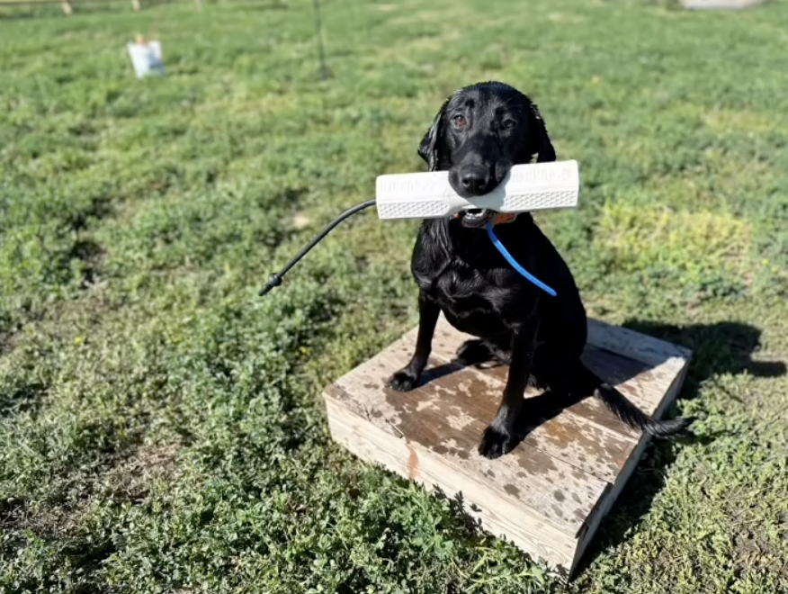

Episode 46 · March 19, 2026 · 3558
Force Fetch Training. What is it? Why do it? How to use it.

About This Episode
In this episode I talk about Force Fetch training or the Trained Retrieve. What it is? Why do it? How to use it and why it is a good thing for most dogs. Enjoy!! Introduce your dogs to guns and start them out right or help fix your gunshy dog using, "THE GUNSHY FIX" at
Questions about the training topics in this episode? Tyce works with bird dog owners and hunters through Utah Bird Dog Training. Reach out to work with him directly.
Resources & Links
- The Gunshy Fix — Sound conditioning program for gunshy dogs.
- Kuranda Dog Beds — Elevated, chew-proof dog beds.
- Utah Bird Dog Training — Tyce's professional training services.
Transcript
Full transcript for Episode 46: Force Fetch Training. What is it? Why do it? How to use it..
Tyce
Hey folks, welcome to the Bird Dog Podcast. My name is Tyce. Today I want to dig into force fetch — what it is, why you do it, and how it actually works. This is one of the most misunderstood topics in dog training, and it's also one of the most valuable things you can do for your dog's retrieve.
Force fetch goes by a few names: trained retrieve, conditioned retrieve. Whatever you call it, the goal is the same — teaching your dog to pick something up on command. That sounds simple, but the implications go deep. Without it, the retrieve is a variable. With it, you have control of your dog's mouth, and that changes everything.
If you watch an untrained dog approach a downed bird, you'll see the full range of possibilities: it might sniff and walk away, pounce and pluck feathers, grab and run, or pick it up and drop it halfway back. Maybe it delivers to hand — that's great when it happens, but it's not guaranteed. Force fetch eliminates those variables. You're building a consistent pattern of pick it up, hold it, bring it back, deliver to hand. Every time.
Before the formal process begins, I do a lot of early conditioning with puppies using physical touch. When a puppy retrieves something back to me, I don't rip the bumper out of its mouth. I say "hold," stroke it down its side, give it a little rub. If it drops the bumper, the petting stops immediately. I say "fetch," and the moment it grabs the bumper again, the petting resumes. Young dogs figure this out fast because they love physical affection. You're essentially using touch as a treat — bumper in mouth gets the reward, dropping it removes it. It's reward-based conditioning that sets up the formal training later.
For the formal force fetch, you need a dog that's already been through basic obedience and, ideally, understands how the e-collar works before you start. We overlay the e-collar later in the process, so having a collar-conditioned dog makes that transition smooth.
The two most common methods for applying pressure are the ear pinch and the toe pinch. The inner ear is sensitive, as are the two front toes. You're going to teach the dog the "hold" command first — put the bumper in its mouth, say hold, and stroke it down while praising. As soon as it drops the bumper, stop the petting. Put it back in, hold, praise. You're building a foundation where the dog is comfortable holding an object and starts to enjoy it. A good hold before you start applying pressure makes the whole process easier.
For a bumper, I like the Gunner bumper — it's foam-filled, slightly elevated in the center, comfortable for the dog to grip. Canvas bumpers or paint rollers also work well in the early stages. Avoid hard plastic in the beginning since it gets slippery and some dogs resist it.
A lot of trainers work on a table or tailgate so they're not bending over, and so the dog's movement is controlled. Once the dog holds reliably, you begin applying pressure. For the toe pinch: wrap a paracord around the front toes. Pull the cord while saying "fetch" and simultaneously guide the bumper toward the dog's mouth. The instant the dog grabs it, release the pressure. That's the lesson: grab the bumper, discomfort stops. Don't grab it, pressure continues. The dog figures out quickly that the only way out is forward. For the ear pinch, it's the same concept — apply pressure to the inner ear, present the bumper, release as soon as the dog takes it.
Don't rush this process. Some dogs get it in a few days; most take about a month to fully force fetch. Work the bumper from right at the dog's mouth, then a few inches away, then further, then to the table surface, then the ground. Every step of the way: apply pressure, dog grabs, pressure releases, praise.
Once the dog is reliably fetching on the table, you transition to the ground. Be ready: dogs are place-oriented, and the ground often feels like school's out. They'll test you for a day or two. Stay consistent, hold your standard, and they come back around.
From here we overlay the e-collar. Start with vibration only. The dog already knows vibration from obedience training — it understands that doing the right behavior turns it off. Apply vibration, say "fetch," back it up with the ear pinch if needed, dog grabs the bumper, everything stops. Once the dog is responding to just the vibration, you can slowly introduce a low level of stimulation — just an irritation level, not high pressure. The pattern is the same: low stim, fetch, grab bumper, everything releases. This transitions the dog off the physical pinch and onto the collar, which is what you want for practical use in the field.
Once a dog is force-fetched, you can use the e-collar while it has something in its mouth. Without force fetch, if you correct a dog with the collar while it's retrieving, it may drop the bird — the collar becomes associated with the object, not the behavior. With a force-fetched dog, the dog understands that grabbing the object is what turns off the stimulation, so the collar actually becomes a tool that reinforces the retrieve rather than disrupting it.
This is also the foundation that makes blind retrieve and handling work possible at volume. When you have a pile of bumpers and you want the dog to take a cast left, pick one up, come back, then go right and pick another one — you can drill that as many reps as needed because the dog will pick up objects on command. Without force fetch, you're limited to however many reps the dog volunteers before it loses interest. With it, you set the pace.
Force fetch also fixes hard mouth. A dog that's chomping birds — squeezing, plucking, destroying — is almost always improved significantly through the trained retrieve. When the dog is properly conditioned to hold and carry, it just gives the bird up cleanly. That's a big deal if you're table-cutting pheasants or keeping ducks in good shape for taxidermy.
I'm a strong believer in force fetch. Not every dog needs it at the same intensity, and there are some dogs with naturally clean retrieves that are easier to work through the process. But if you want control, consistency, and the ability to do advanced work — handling, blind retrieves, multiple marks — the trained retrieve is the foundation everything else is built on. Thanks for listening.
About the Host
Tyce Erickson
Tyce Erickson is a professional bird dog trainer and the owner of Utah Bird Dog Training in Utah. For nearly two decades he has worked with pointing dogs, retrievers, and family hunting dogs — helping owners build dogs that are capable and enjoyable in the field. The Bird Dog Podcast is an extension of that work: honest conversations on training, hunting, breeding, and everything that goes into a life spent working dogs.
More About Tyce